研究日誌
先生曰く、もっとパッと目を引くようなデジタルファブリケーションを使った服を作ることも大事じゃなのかと。私は実用性の美に惹かれて全然考えてなかったな…。さらに先生が言うには、目を引くものを作らないとせっかくやっても埋もれてしまうとのこと。一理あります。洋服考えるの好きだから、いろいろ試行錯誤したのを応用して、作品(実用性を求めないので、そう呼ぶことにする)を作っていきたいと思う。
(しかし…卒論にするときにこの分野はどうやってまとめるのか…。)
十二単は重ねた布の美しさが見事である。布を重ねるというのはいいキーワードだと思い、レーザーカッターで切った文様をいくつか重ねたら素敵な何かになるんじゃないかな…という発想。
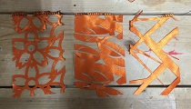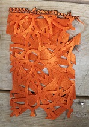
データを作成し試作を作成。写真だと重なりの部分が見えずらいが、同じ色でも高さができることで平面の中に立体感ができる。紙の作品でも切り絵を重ねて作品を作るやつあるから、それの布版ともいえる。レーザーカッターの可能性に挑戦しているかといわれるとちょっと怪しい…。布はブロードを使うかと計画中。(実は布探しがことのほか難航している。11/29に杉野学園というところに行ってみる予定。)
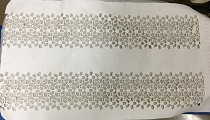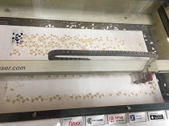
パーツの前面に桜模様を入れようかと思っていたが、レーザーの稼働時間があまりに長かったので、検討し直すことにした。そして、スカートパーツに2本桜模様を入れることにした。これによって強度も少しは上がるだろう…。レーザーカッターで切っている時はレーザーカッターの中に春が来ていた。こんなところで桜吹雪を目撃するとは…。
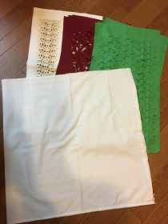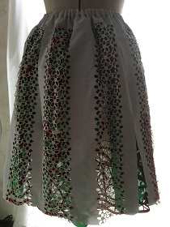
桜、枝、葉の3つを重ねて重ねの美をつくる。スケスケでスカートとしての機能を何も果たしていないため、裏をつけた。110(布幅)×550㎜の布をとり、片方にゴムを通す穴をレーザーでカットした。アイロンを布をぴったりとくっつけるようにかけるとと二重でもきれいに切れることが分かった。(単純な絵柄はこれを利用できるかもしれない)パワーは一枚で切るときは6にしているが、7にして切った。
それぞれの柄のつなぎ目の部分をずらすようにして組み立ててみたが、イマイチ…。桜が後ろの色に負けてしまっている感じがする。前にみたアクリル絵の具で布を染色する方法を使って桜の中心部分に色を付けてみようか…。あと重ね方はつなぎ目余りずらさないで組み立ててみようかな…。ちなみにピンクのゴムはそういうのが売ってた。可愛い。
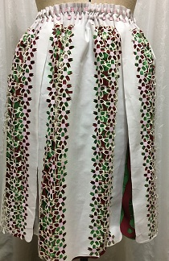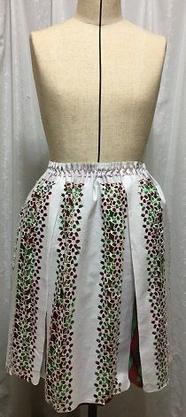
ゴムの色に合わせて色を着色。アクリル絵の具のマゼンタを使用。水に溶いて筆で雫を落とすことで布にインクがにじむように着色した。
十二単なんて厳かなものとはかけ離れてしまったけど、重ねて下の模様を出すことができることが分かった。スカートで前面にやると衣装感が出てしまうが、袖や襟の一部に取り入れると普段でも着やすいかもしれない。
| 素材 | 価格(税抜) | 購入場所 |
|---|---|---|
| T/Cブロード | 580/ｍ | ユザワヤ |
| キングスパンカラ―― | 297 | ユザワヤ |
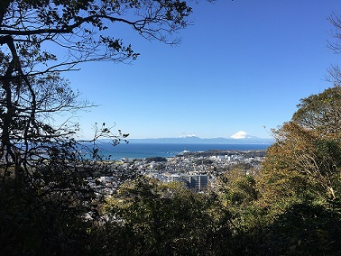
故郷の「横須賀市歌」から拝借。横須賀美術館の前に開けた海があまりにも奇麗だったからこれをテーマにしたい。写真は三浦富士の絶景が見えるところから撮った写真だからあくまでイメージ。でも海の色や白波はこんな感じだった。作品は江の島の展示で作ったように、小さいパーツ・波を繋げて作れないかと…。今回は着れるように裏をつけて、多少ミシンを使いたいと思う。
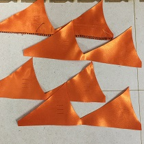
波の形をつなぎ合わせてスカートを作る。目標は、マキシ丈。重なり部分が多いからかなり布を使うだろう。写真では2つの波になっているが、実際に作るときは最大限形を繋げて出力したい。
問題はどうやって組み立てていくかだ。納得のいく組み方を思いつかないのだ。当初は穴を三つ空けて紐を二重に巻き付けるところを作ることで固定しようと思ったが、力がかかるからしわが寄って全体が丸くなってしまうし、ぼこぼこして着にくそう。だからといって、ただ紐を穴に通すだけでは滑ってしまう。
斜めに紐を通す案も思いついた。着て動いたときの強度を期待できそう。しかし、紐を通す部分が表に出てしまうからあまり美しくない…。
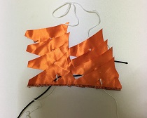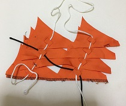
斜めを考えてみた。しかし、これならわざわざ斜めにする必要もなかったな…。また、紐は地面に対して垂直に垂れるから斜めだと上手く支えきれるのかがわからない。斜めに沿ってだんだん平行四辺形みたいに形が変わっていきそうだから端っこをどうするかが問題となる。
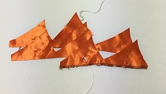
奇数偶数でずらす作戦。でも間が妙に空いてしまうからイマイチ。斜めは良さそうに見えて重力に一部逆らうから使い方次第ということが分かった。また、紐を通すところは別のパーツと一緒に編めるようにするなど2重になってると丈夫だろうな。(干渉するパーツが多いため修理は大変だが。)
| 素材 | 価格(税抜) | 購入場所 |
|---|---|---|
| コスチュームサテン | 380/ｍ | ユザワヤ |
| アムンゼン | 800/m(?) | ユザワヤ |
台形を組み合わせると裾が広がることを以前スカートのミニチュアを作ることで実践した。これを応用して、シャツを作ってみる。
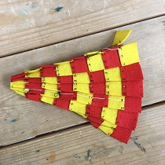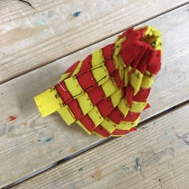
とりあえず試作品。5分の1サイズで作成。しかも片側だけ。思惑通り袖に向かって縮む形を作ることができた。反対側も同じように行う。どんな布で作るべきかが問題だ。
| 素材 | 価格(税抜) | 購入場所 |
|---|---|---|